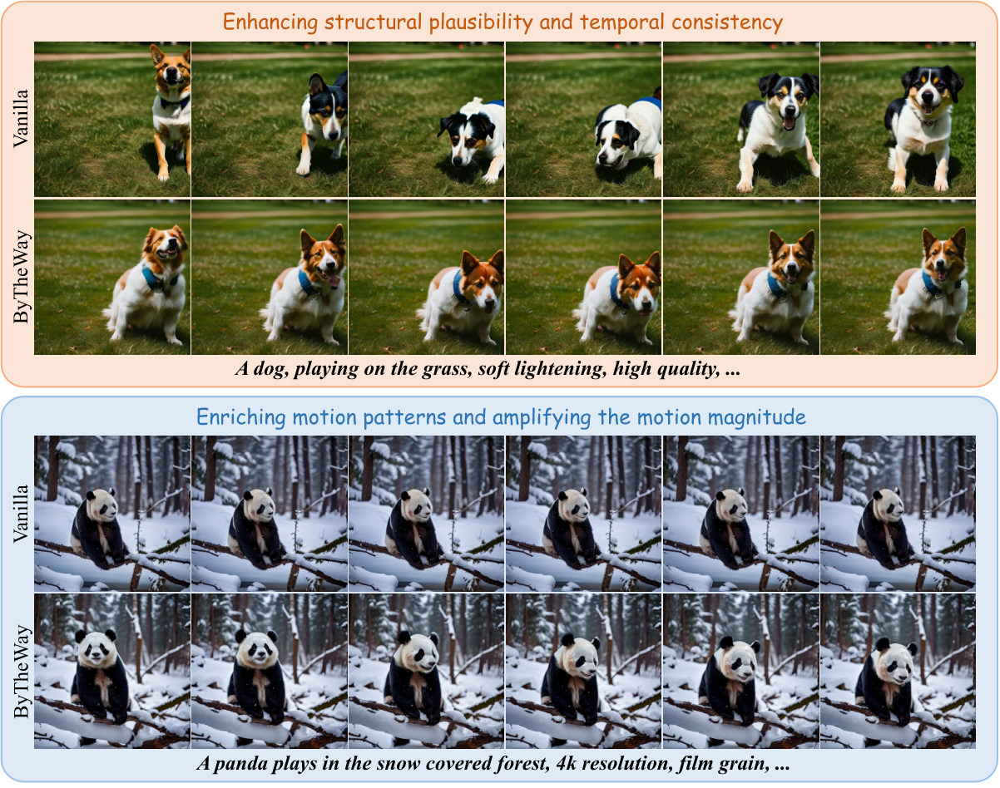
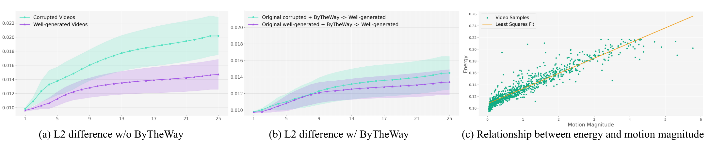
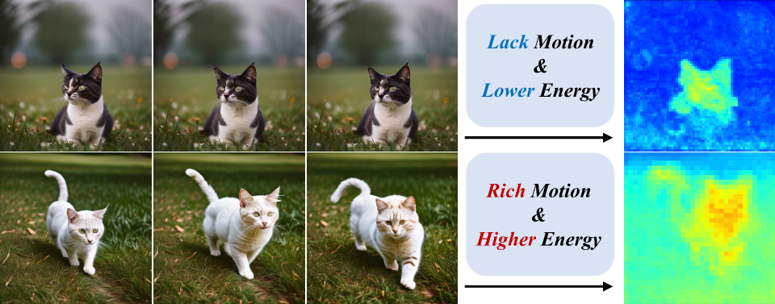
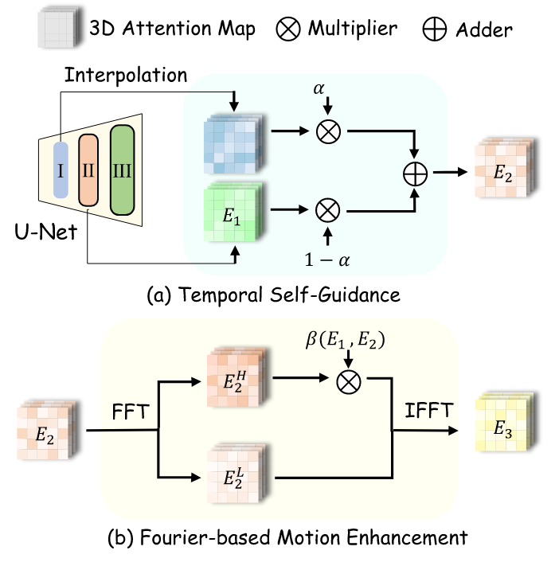
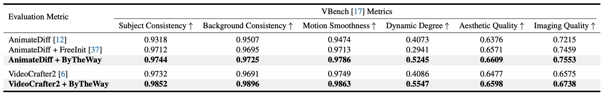

🔥ByTheWay: Boost Your Text-to-Video Generation Model to Higher Quality in a Training-free Way


The text-to-video (T2V) generation models, offering convenient visual creation, have recently garnered increasing attention. Despite their substantial potential, the generated videos may present artifacts, including structural implausibility, temporal inconsistency, and a lack of motion, often resulting in near-static video. In this work, we have identified a correlation between the disparity of temporal attention maps across different blocks and the occurrence of temporal inconsistencies. Additionally, we have observed that the energy contained within the temporal attention maps is directly related to the magnitude of motion amplitude in the generated videos. Based on these observations, we present ByTheWay, a training-free method to improve the quality of text-to-video generation without introducing additional parameters, augmenting memory or sampling time. Specifically, ByTheWay is composed of two principal components: 1) Temporal Self-Guidance improves the structural plausibility and temporal consistency of generated videos by reducing the disparity between the temporal attention maps across various decoder blocks. 2) Fourier-based Motion Enhancement enhances the magnitude and richness of motion by amplifying the energy of the map. Extensive experiments demonstrate that ByTheWay significantly improves the quality of text-to-video generation with negligible additional cost. Our code is available at ByTheWay Repo.
(1) For a given sampling process, the difference in shallow-layer features strongly correlates with that in deep-layer features on a sample-specific basis, enabling them to serve as an on-the-fly proxy for the final model output evolution.


DiCache consists of Online Probe Profiling Strategy and Dynamic Cache Trajectory Alignment. The former dynamically determines the caching timing with an online shallow-layer probe at runtime, while the latter combines multi-step caches based on the probe feature trajectory to adaptively approximate the feature at the current timestep. By integrating the above two techniques, DiCache intrinsically answers when and how to cache in a unified framework.

Qualitative comparisons with existing caching-based methods. DiCache consistently outperforms the baselines in terms of both visual quality and similarity to the original results across diverse scenarios and generation backbones.

Quantitative assessments of the proposed DiCache and other baselines. Unlike existing methods, DiCache dynamically determines its caching timings and effectively utilizes multi-step caches based on online probes, achieving a unification of rapid inference speed and high visual fidelity. "OOM" indicates CUDA out of memory on the A800 80GB GPU.

If you find this work helpful, please cite the following paper:
@inproceedings{bu2025bytheway,
title={ByTheWay: Boost Your Text-to-Video Generation Model to Higher Quality in a Training-free Way},
author={Bu, Jiazi and Ling, Pengyang and Zhang, Pan and Wu, Tong and Dong, Xiaoyi and Zang, Yuhang and Cao, Yuhang and Lin, Dahua and Wang, Jiaqi},
booktitle={Proceedings of the Computer Vision and Pattern Recognition Conference},
pages={12999--13008},
year={2025}
}
Project page template is borrowed from FreeScale.